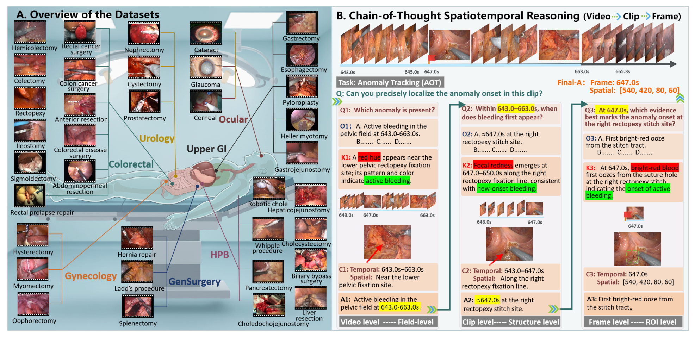
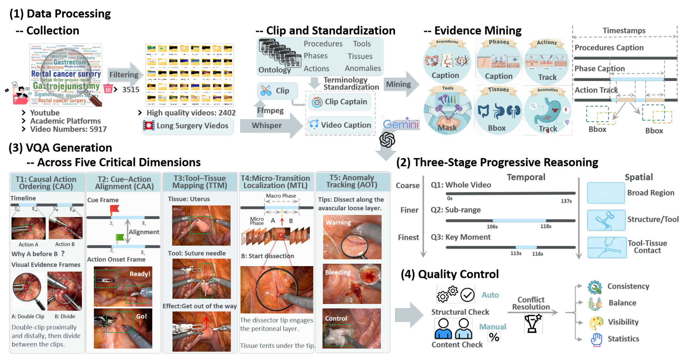
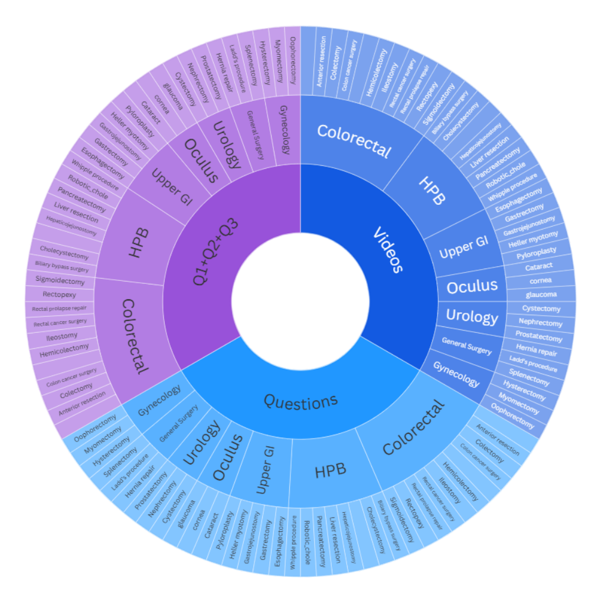
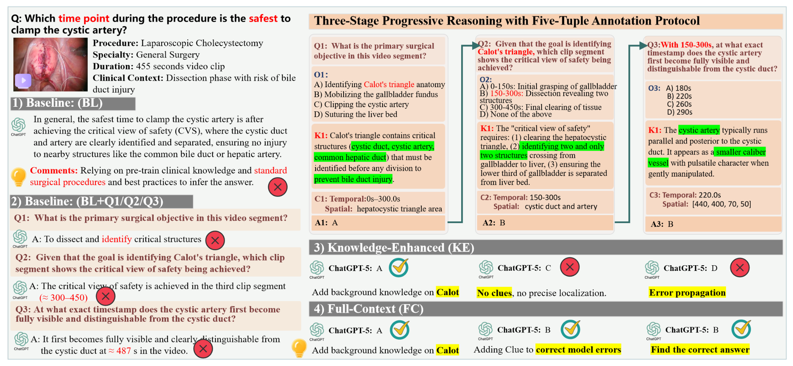

SurgCoT: can a model get the surgical answer right while getting the reasoning chain wrong?
The short version. SurgCoT is a benchmark for surgical videos, not a new model. It asks whether a multimodal large language model (MLLM) can follow a visible clinical chain: detect the surgical event, localize it in time and space, then make the final decision. The benchmark contains 2,841 videos across 7 specialties and 35 procedures, with 19,345 main questions and 59,177 sub-questions. Each question is organized as a five-tuple: Question, Option, Knowledge, Clue, and Answer. The important result is not just that commercial models score high on main questions; it is that the same models often fail the intermediate steps. In the Full-Context setting, GPT-5 and Claude-Sonnet-4.5 tie at the top on the main question (87.58% vs 87.54%), then split apart on Q3 — the fine-grained frame-localization step — where GPT-5 falls to 50.51% and Claude to 30.44% (the lowest in Table 3). The gap the benchmark cares about opens only once you look past the final answer. The caveat is central: Full-Context gives the model the Knowledge and Clue fields, so a high FC score shows that the model can use supplied evidence, not that it can always find that evidence by itself.
{kind=link}

1. Motivation: why final-answer VQA is too weak for surgery
Visual question answering (VQA) usually scores whether the final answer is correct. That is not enough for surgical video. A surgeon may need to know when a bleed first appears, which tissue-tool contact caused it, and whether the next action is safe. Those facts live across time and space, not in a single frame.
The paper argues that earlier surgical benchmarks leave this gap open. General-purpose surgical benchmarks cover broad scenes but often ask generic phase or instrument questions. Specialized benchmarks go deeper in one domain, such as ophthalmic or endoscopic surgery, but often treat a video as separated frames or clips. SurgCoT is built around the missing ability: progressive spatiotemporal reasoning, meaning a model must carry evidence from one time-and-location decision into the next.
Q: Why not ask one hard question, such as "where did the bleeding start?"
Guide: one hard question scores the endpoint. It does not tell us whether the model saw the evidence or guessed from surgical priors and answer options.
A: SurgCoT splits the hard question into a chain. Q1 asks for the broad event, Q2 asks for the relevant clip and coarse location, and Q3 asks for the precise frame-level evidence. If the model answers the final question correctly but misses Q2 or Q3, the benchmark exposes that mismatch.
Takeaway: The benchmark is designed to separate "right answer" from "right path."
2. Contributions: what the paper actually claims
The authors state three contributions. First, SurgCoT is a surgical-video reasoning benchmark with cross-specialty procedural coverage and five clinical reasoning dimensions. Second, it introduces a three-stage reasoning framework and a five-tuple annotation protocol that links video-level, clip-level, and frame-level evidence. Third, it evaluates leading MLLMs and reports that current systems still have large gaps in surgical chain-of-thought (CoT) reasoning.
The stronger reader takeaway is narrower than a slogan like "SurgCoT solves surgical reasoning." It does not. It builds a test where the answer path can be audited. That matters because Table 3 shows a real failure mode: high main-question accuracy can coexist with weak sub-question accuracy.
How to read every score in this page
Accuracy is the percentage of correct multiple-choice answers. BL means Baseline, where the model receives only the video and main question. KE means Knowledge-Enhanced, where clinical background is added. FC means Full-Context, where Knowledge and video-grounded Clue are both supplied. The BL to KE to FC comparisons are controlled prompt settings, not model training gains.
3. Dataset: from raw surgical video to auditable evidence
SurgCoT starts from 8,917 surgical cases gathered from public platforms, ten open-source repositories, and proprietary clinical archives. The authors filter for procedural completeness, clinical validity, and bilingual narration useful for temporal alignment. The retained set has 2,841 de-identified videos, which is 31.9% of the original corpus.
The seven specialties are Colorectal, Urological, Upper Gastrointestinal, Ocular, Gynecologic, General Surgery, and Hepatobiliary-Pancreatic. The final benchmark has 19,345 main questions and 59,177 sub-questions, averaging 7 main questions and 21 sub-questions per video.
{kind=link}

Evidence mining is where the benchmark becomes more than a question list. The paper keeps public annotations when available, then uses YOLOv10 for tissue detection, SAM2 for tool segmentation, and ByteTrack for cross-frame tracking. Anomalies receive onset time and minimal ROI annotations. These annotations are aligned with ASR timestamps so a model's reasoning can be checked against video evidence.
{kind=link}

| Benchmark | Domain | #Spe. | #Pro. | Scale | Unit | ST | Pro. | Loc. | Clin. |
|---|---|---|---|---|---|---|---|---|---|
| Surgical-VQA [35] (MICCAI'21) | Endoscope | ∼ | 3 | 11.8K | Frame | × | × | ✓ | ✓ |
| EndoVis-VQLA [3] (ICRA'23) | Endoscope | ∼ | 1 | 9.5K | Frame | × | × | ✓ | ✓ |
| Endo-FM [46] (MICCAI'23) | Endoscope | ∼ | 2 | 33K+50K | Clip/Frame | × | × | ✓ | ✓ |
| CoPESD [44] (arXiv'24) | Endoscope | ∼ | 1 | 17.7K | Frame | × | ✓ | ✓ | ✓ |
| SurVLP [52] (MedIA'25) | Endoscope | ∼ | 11 | 25.5K | Frame | × | × | × | × |
| Surg-3M [5] (arXiv'25) | Endoscope | ∼ | 35 | 30K | Frame | × | × | × | × |
| Surg-396K [42] (MIA'26) | Endoscope | 3 | 3 | 396K | Frame | × | × | ✓ | ✓ |
| Cholec80-VQA [35] (MICCAI'22) | Laparoscopic | 1 | 1 | 43K | Frame | × | × | × | ✓ |
| GSViT [34] (arXiv'24) | Laparoscopic | 1 | 28 | 7000K | Frame | × | × | × | × |
| GenSurg+ [15] (arXiv'24) | Laparoscopic | 2 | 28 | 17K | Clip | × | × | × | × |
| MedVidQA [12] (BioNLP@ACL'24) | Instructional | ∼ | ∼ | 1.2K | Clip | × | × | × | ✓ |
| Surg-QA [23] (arXiv'24) | Instructional | ∼ | ∼ | 10.2K | Video | × | × | × | × |
| M3-Med [28] (arXiv'25) | Instructional | ∼ | ∼ | 3.7K | Clip | × | × | × | ✓ |
| OphNet [16] (ECCV'24) | Ophthalmic | 1 | ∼ | 14K | Video | × | ✓ | ✓ | ✓ |
| OphVL [17] (arXiv'24) | Ophthalmic | 1 | ∼ | 375K | Clip | × | × | × | ✓ |
| EyePCR [43] (arXiv'25) | Ophthalmic | 1 | ∼ | 210K | Clip/Frame | × | ✓ | × | ✓ |
| PSI-AVA-VQA [36] (MICCAI'23) | Generalist | 1 | 1 | 10.3K | Frame | × | × | ✓ | ✓ |
| SSG-VQA [51] (IJCARS'24) | Generalist | 1 | 1 | 960K | Frame | × | × | ✓ | ✓ |
| SurgVLM-Bench [53] (arXiv'25) | Generalist | 4 | 16 | 7798.4K | Frame | × | ✓ | ✓ | × |
| MedFrameQA [50] (arXiv'25) | Generalist | 9 | ∼ | 3.4K | Multi-Frame | ✓ | × | × | ✓ |
| SurgBench [47] (arXiv'25) | Generalist | 11 | 22 | 23K+5300K | Clip/Frame | × | × | ✓ | ✓ |
| SurgCoT (Ours) | Generalist | 7 | 35 | 2.8K+19K+19K | Video/Clip/Frame | ✓ | ✓ | ✓ | ✓ |
How to read Table 1: SurgCoT is not the widest benchmark by specialty count. SurgBench has 11 specialties and MedFrameQA has 9. SurgCoT's claim is different: among the rows shown, it is the only one with all four properties checked: spatiotemporal modeling, progressive reasoning protocol, localization supervision, and clinician reference standards.
4. Pipeline: the three-stage chain
The paper's central design is a progressive conditioning chain. The model does not answer three unrelated questions. Each stage passes its Answer into the next stage, so the next question is conditioned on the previous conclusion.
How to read Eq. 1
$Q$ is the question, $O$ the options, $K$ the Knowledge field, $C$ the Clue field, and $A$ the Answer. $A_1$ enters the Q2 input, and $A_2$ enters the Q3 input. That carry-forward is the audit rule: the final decision should be grounded in earlier verified evidence.
The stages have different jobs. Q1 searches the whole video for the high-level event, such as whether active bleeding is present. Q2 localizes the event in a relevant clip and region. Q3 locks the answer to a frame, patch, or anatomical site, often at bounding-box or pixel granularity. This is why the benchmark can catch a shortcut: a model can guess the final multiple-choice option while failing the narrower localization steps.
Q: Does the chain automatically make reasoning better?
Guide: the chain helps only if each stage adds real information. A wrong Q1 can push Q2 and Q3 in the wrong direction.
A: The design reduces the search space when the earlier answer is correct. Instead of searching an entire video, Q3 searches inside a bounded time window and ROI. But the same dependency also creates an error path. SurgCoT controls this with schema checks, no-answer-leakage checks, and human validation, but the paper does not quantify how much a wrong Q1 degrades Q2 and Q3.
Takeaway: The chain is useful because it makes the path auditable; it is not proof that every model follows the path.
5. Method: what the five-tuples and five tasks measure
Each stage is annotated with a five-tuple. The Question asks a clinically meaningful query. The Option field gives mutually exclusive candidates. Knowledge supplies domain priors, such as anatomy, device behavior, or typical color and flow patterns. Clue supplies video-grounded evidence, such as a timestamp, landmark, ROI, or visual track. Answer is the adjudicated target and becomes context for the next stage.
The five task families cover different kinds of surgical reasoning:
| Acronym | Task | What it tests | Example target from the paper |
|---|---|---|---|
| CAO | Causal Action Ordering | Whether the model can order surgical micro-actions by causal dependency. | Clip placement precedes and enables scissor division. |
| CAA | Cue-Action Alignment | Whether pre-action cues can be aligned with the first visible execution in time and space. | Visible execution begins around 425s at the hook-peritoneum interface over Calot's triangle. |
| AM | Affordance Mapping | Whether tool-tissue interactions are grounded to an action and location. | Uterine suspension at the anterior serosal needle entry at about 485s. |
| MTL | Micro-Transition Localization | Whether the boundary between micro-phases can be located from minimal visual evidence. | A shift from positioning to dissection at about 312s. |
| AOT | Anomaly Onset Tracking | Whether an abnormal event onset and early trajectory can be localized. | Bleeding onset at 647.0s with spatial box [540, 420, 80, 60]. |
Quality control has two layers. Automated checks enforce schema integrity, temporal and spatial progression, and absence of answer leakage. Dual-annotator content validation with expert adjudication checks task dependency, rationale verifiability, and ontology compliance. The paper names four quality dimensions: Consistency, Balance, Visibility, and Statistical Reliability.
6. Training and evaluation setup: what was actually run
SurgCoT does not train a new MLLM. It evaluates existing commercial, open-source, and medical-specialized models. The paper uses accuracy as the primary metric and evaluates 10 models in the printed tables, even though the introduction says 12 leading MLLMs.
The model groups are: commercial GPT-5, Claude-Sonnet-4.5, and Gemini-2.5-Pro; open-source Qwen2.5-VL-7B, Qwen3-VL-8B, and InternVL-8B; medical-specialized MedGemma-27B-IT, Lingshu-7B, LLaVA-Med-7B, and HuatuoGPT-Vision-7B.
The decoding setup is fixed across models: zero-shot prompt template, temperature 0.0, top_p 1.0, max_new_tokens 4096, repetition_penalty 1.0, and no sampling retries. API-hosted models are called with those parameters. Local open-source models run with Torch 2.9.0 and Transformers 4.57.1 on CUDA 12.4, using bf16 inference on 8 NVIDIA A100 80 GB GPUs. The paper does not state total wall-clock time, GPU-hours, total token count, or API cost.
7. Experiments: average FC is high, but column-level wins are mixed
Table 2 is the main leaderboard. It evaluates 10 MLLMs across five task families and three settings: BL, KE, and FC. The safest reading is by matched setting. Do not compare a BL value against another model's FC value.
| Model | CAO | CAA | AM | MTL | AOT | Avg. | ||||||||||||
|---|---|---|---|---|---|---|---|---|---|---|---|---|---|---|---|---|---|---|
| BL | KE | FC | BL | KE | FC | BL | KE | FC | BL | KE | FC | BL | KE | FC | BL | KE | FC | |
| GPT-5 | 85.07 | 91.56 | 94.79 | 80.99 | 85.29 | 90.64 | 78.97 | 77.67 | 82.34 | 69.14 | 81.63 | 86.71 | 68.95 | 66.53 | 78.23 | 76.62 | 80.54 | 87.58 |
| Gemini-2.5-Pro | 89.66 | 93.99 | 96.92 | 77.97 | 76.75 | 84.62 | 60.31 | 73.20 | 86.55 | 69.82 | 82.73 | 84.05 | 52.32 | 76.48 | 80.85 | 70.02 | 81.83 | 87.20 |
| Claude-Sonnet-4.5 | 92.81 | 97.99 | 98.33 | 83.66 | 86.46 | 89.12 | 59.80 | 68.10 | 87.51 | 79.49 | 72.45 | 86.39 | 54.74 | 67.35 | 75.34 | 74.10 | 78.87 | 87.54 |
| MedGemma-27B-IT | 83.67 | 94.99 | 96.99 | 74.02 | 81.28 | 86.49 | 73.39 | 70.83 | 79.26 | 72.69 | 75.54 | 85.60 | 51.02 | 59.27 | 80.52 | 70.96 | 76.37 | 86.37 |
| Lingshu-7B | 86.68 | 97.24 | 97.50 | 65.83 | 64.57 | 72.27 | 49.06 | 53.98 | 63.50 | 65.12 | 68.99 | 73.84 | 50.46 | 62.46 | 67.64 | 63.43 | 69.45 | 74.95 |
| LLaVA-Med-7B | 89.95 | 96.93 | 97.50 | 66.10 | 72.34 | 71.52 | 62.29 | 74.68 | 76.16 | 71.43 | 81.84 | 88.67 | 50.97 | 47.25 | 74.81 | 68.15 | 75.22 | 81.73 |
| HuatuoGPT-Vision-7B | 78.47 | 80.53 | 88.74 | 68.28 | 65.91 | 73.24 | 67.24 | 68.63 | 81.37 | 72.53 | 72.69 | 87.37 | 63.89 | 68.21 | 77.95 | 70.08 | 71.19 | 83.73 |
| InternVL-8B | 90.72 | 94.17 | 97.53 | 70.08 | 73.88 | 82.75 | 59.12 | 59.45 | 68.46 | 68.35 | 69.52 | 84.85 | 51.46 | 65.90 | 76.03 | 67.95 | 73.58 | 82.32 |
| Qwen2.5-VL-7B | 84.42 | 87.17 | 98.98 | 65.64 | 68.77 | 83.56 | 60.95 | 66.78 | 68.41 | 76.59 | 83.40 | 85.02 | 56.64 | 49.97 | 61.30 | 68.85 | 71.22 | 79.45 |
| Qwen3-VL-8B | 87.96 | 92.69 | 96.77 | 75.51 | 87.42 | 91.57 | 60.67 | 66.75 | 73.30 | 74.07 | 76.10 | 83.30 | 79.00 | 77.46 | 86.68 | 75.44 | 81.48 | 86.92 |
On average FC, the three commercial models form the top cluster: GPT-5 87.58, Claude-Sonnet-4.5 87.54, and Gemini-2.5-Pro 87.20. The 0.04 gap between GPT-5 and Claude is within the noise without error bars, so it should be read as a tie, not a meaningful win. The column-level story is less clean: Qwen2.5-VL-7B has the best CAO-FC value at 98.98; Qwen3-VL-8B has the best CAA-FC value at 91.57 and the best AOT-FC value at 86.68; LLaVA-Med-7B has the best MTL-FC value at 88.67.
BL to KE to FC usually raises the average, but it is not monotonic in every column. GPT-5 drops from 78.97 to 77.67 in AM when moving BL to KE, and from 68.95 to 66.53 in AOT, before FC raises both. Claude drops from 79.49 to 72.45 in MTL under KE. The safe claim is therefore: the extra fields improve average performance in the table, while some task-setting cells still move backward.
{kind=link}

8. Diagnostics: main-question success is not chain success
Table 3 is the sharper diagnostic table. It checks whether the model's main answer agrees with its sub-question path. Here Q is the main question, while Q1, Q2, and Q3 are the staged sub-questions.
| Model | BL | KE | FC | ||||||
|---|---|---|---|---|---|---|---|---|---|
| Q | Q | Q1 | Q2 | Q3 | Q | Q1 | Q2 | Q3 | |
| GPT-5 | 76.62 | 80.54 | 54.71 | 55.85 | 47.60 | 87.58 | 56.12 | 56.15 | 50.51 |
| Gemini-2.5-Pro | 70.02 | 81.83 | 34.15 | 44.04 | 43.06 | 87.20 | 35.85 | 34.02 | 52.32 |
| Claude-Sonnet-4.5 | 74.10 | 78.87 | 49.38 | 41.42 | 36.50 | 87.54 | 53.04 | 34.85 | 30.44 |
| MedGemma-27B-IT | 70.96 | 76.37 | 54.82 | 56.75 | 76.25 | 86.37 | 61.29 | 71.25 | 70.42 |
| Lingshu-7B | 63.43 | 69.45 | 36.06 | 47.93 | 43.53 | 74.95 | 48.36 | 58.58 | 56.52 |
| LLaVA-Med-7B | 68.15 | 75.22 | 31.71 | 36.65 | 36.46 | 81.73 | 34.40 | 39.75 | 37.57 |
| HuatuoGPT-Vision-7B | 70.08 | 71.19 | 69.97 | 67.69 | 55.62 | 83.73 | 72.13 | 70.31 | 69.00 |
| Qwen3-VL-8B | 75.44 | 81.48 | 72.90 | 51.00 | 73.04 | 86.92 | 74.75 | 67.49 | 70.98 |
| Qwen2.5-VL-7B | 68.85 | 71.22 | 31.85 | 27.02 | 25.33 | 79.45 | 38.14 | 29.87 | 36.80 |
| InternVL-8B | 67.95 | 73.58 | 67.80 | 65.79 | 48.86 | 82.32 | 64.89 | 55.28 | 51.63 |
The commercial models dominate the FC main-question column, but they do not dominate the FC sub-question columns. On FC-Q3, Qwen3-VL-8B reaches 70.98, MedGemma-27B-IT reaches 70.42, and HuatuoGPT-Vision-7B reaches 69.00; all three beat GPT-5 at 50.51, Gemini-2.5-Pro at 52.32, and Claude-Sonnet-4.5 at 30.44. Qwen3 and MedGemma are effectively tied at the top of FC-Q3 without error bars, while Claude has the lowest FC-Q3 value in the table.
This is the paper's most useful warning. A model can score well on the main question while losing the chain that should justify it. GPT-5's FC main answer is 87.58, but its FC-Q3 is 50.51. Claude-Sonnet-4.5 is tied on the FC main answer at 87.54, but FC-Q3 falls to 30.44. That mismatch is exactly what a surgical benchmark should expose.
Q: If the final option is correct, why care that Q3 is wrong?
Guide: in surgery, a decision is only as reliable as the evidence path that led to it.
A: Q3 asks for the precise visual anchor. If a model cannot localize the onset frame or region, the final answer may be driven by language priors, answer-option patterns, or common surgical knowledge. That may score well on a multiple-choice endpoint, but it is not evidence-grounded reasoning.
Takeaway: Table 3 turns "high accuracy" into an auditable claim: high main-question accuracy must be checked against the chain, especially Q2 and Q3.
9. Limitations: where the result should stop
| Boundary | Evidence in the paper | How to read it |
|---|---|---|
| Conditional evidence use | FC supplies Video, Knowledge, and Clue. | FC performance shows that models can use supplied evidence. It does not prove that they can always discover the Clue field autonomously. |
| Error propagation not quantified | The chain carries $A_1$ into Q2 and $A_2$ into Q3. | The design can narrow the search, but the paper does not report how much Q1 errors degrade later stages. |
| Model-count mismatch | The introduction says 12 leading MLLMs; Tables 2 and 3 list 10. | This page treats the printed 10-model tables as authoritative for numerical claims. |
| Specialty coverage trade-off | SurgCoT has 7 specialties; SurgBench has 11 and MedFrameQA has 9 in Table 1. | SurgCoT's strength is the full ST/Pro./Loc./Clin. combination, not the maximum specialty count. |
| Runtime and API cost missing | The paper gives local hardware and decoding settings. | Total evaluation time, token usage, GPU-hours, and commercial API cost are not stated in the paper. |
| Dataset release status unclear | The abstract gives a code URL. | The paper does not state, in the extracted text, whether the complete benchmark data are publicly released. |
| Clinical deployment not established | The evidence is benchmark accuracy on surgical video QA. | The paper supports research evaluation of reasoning, not autonomous surgical decision-making. |
The main limitation is not a flaw in the benchmark. It is the distinction the benchmark makes visible: supplied clues can improve answers, but finding those clues remains the harder capability.
10. Summary: the useful mental model
In one sentence: SurgCoT turns surgical video reasoning into a staged audit, so a model must justify the final answer through video-level, clip-level, and frame-level evidence.
Three takeaways
- Final accuracy is not enough. Table 3 shows that the main answer can be correct while Q2 or Q3 is weak.
- The five-tuple protocol is the intervention. Knowledge supplies clinical priors, Clue supplies time-and-place evidence, and Answer carries the dependency forward.
- The headline result is calibrated. Commercial models lead average FC, but open and medical models beat them in several sub-question columns, especially FC-Q3.
A good reading path is: start with Figure 1 to understand the staged task, read Eq. 1 to see the carry-forward dependency, check Table 2 for average gains, then spend the most time on Table 3 because it tests whether the chain actually holds.
Sources and figure provenance
- Gui Wang, YongSong Zhou, Kaijun Deng, Wooi Ping Cheah, Rong Qu, Jianfeng Ren*, Linlin Shen*. SurgCoT: Advancing Spatiotemporal Reasoning in Surgical Videos through a Chain-of-Thought Benchmark. arXiv:2604.20319v1 [cs.CV], 22 Apr 2026. * Corresponding authors, as marked in the PDF.
- All formulas, tables, model names, task names, dataset sizes, decoding parameters, and numerical comparisons in this page are taken from
/tmp/surgcot.txt, produced from the local PDF withpdftotext -layout sources/surgcot.pdf /tmp/surgcot.txt. Explanatory framing is reader interpretation from the paper, not an added external claim. - Figure provenance: Page Figure 1 uses
assets/figures/surgcot/surgcot_fig1.pngand maps to paper Figure 1, covering dataset overview and the AOT video-to-clip-to-frame example. Page Figure 2 usesassets/figures/surgcot/surgcot_fig2.pngand maps to paper Figure 2, the benchmark construction pipeline. Page Figure 3 usesassets/figures/surgcot/surgcot_fig3.pngand maps to paper Figure 3, the statistics sunburst for videos, questions, specialties, and procedures. Page Figure 4 usesassets/figures/surgcot/surgcot_fig4.pngand maps to paper Figure 4, the BL to KE to FC qualitative reasoning example.